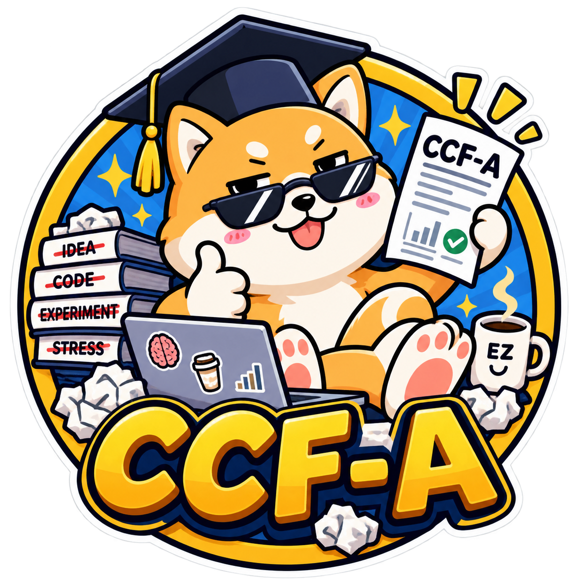

CCF-A Paper Printer ($CCFAA) is an entertainment-focused meme coin built around a simple, deliberately playful idea: “Believe me, anyone can publish a CCF-A paper.”
The project turns the intimidating world of academic rankings, conference culture, technical writing, and internet credentials into a community meme. Instead of presenting itself as an academic authority, $CCFAA treats the phrase “CCF-A” as a cultural prompt: a badge of ambition, a source of jokes, and a printer that never stops producing questionable paper titles.
$CCFAA is issued on Solana and launched through the pump.fun bonding curve fair-launch mechanism. The token has a fixed supply of 1,000,000,000 $CCFAA, with no presale and no team allocation. The project’s purpose is cultural and communal: to create a recognizable meme, encourage creative participation, and give people a shared language for joking about papers, rankings, credentials, and the eternal quest to publish something impressive.
Official website: https://auto-crypto.github.io/ccf-a-paper-printer/
Contract address:
BLQHnrmkmouKyGjDrEhrrFfpBt2H8bLms3GkM3NSbCsu
This whitepaper explains the project’s background, token structure, community direction, roadmap, and risks. It does not present $CCFAA as an academic credential, an investment product, or a guarantee of access, recognition, or success.
In technology and computer science communities, conference rankings can carry a great deal of symbolic weight. The phrase “CCF-A” evokes a highly competitive category of venues in the Chinese computer science academic ecosystem. For many students, researchers, engineers, and online observers, it can represent ambition, pressure, prestige, and the sometimes absurd distance between having an idea and producing a paper that satisfies every requirement.
That tension is where the meme begins.
CCF-A Paper Printer imagines a machine that can instantly produce the most important-looking part of the process: the title. Feed it enough confidence, buzzwords, diagrams, and an appropriately serious tone, and out comes a paper that sounds like it belongs in a conference program. The printer may produce titles such as “A Unified Framework for Automated Framework Unification” or “Towards Scalable Scalability in Large-Scale Systems.” Whether the underlying contribution is revolutionary, obvious, unfinished, or entirely fictional is part of the joke.
The project’s tagline, “Believe me, anyone can publish a CCF-A paper,” is intentionally provocative and unserious. It is not a claim that academic publishing is easy, that standards do not matter, or that a token can provide credentials. Instead, it satirizes the confidence often found in online technical discussions, where a polished title and a few impressive terms can make almost any idea sound publication-ready.
The printer is also a metaphor for internet culture. Memes are generated, remixed, cited, reprinted, and passed from one community to another. A single phrase can become a template, a reaction image, a parody abstract, or a full community language. $CCFAA belongs to that playful tradition.
The lore is intentionally open-ended. A holder might imagine the printer as:
None of these interpretations should be read as a promise of academic acceptance or institutional recognition. The humor works because real research is difficult, while internet culture often pretends that the right combination of formatting and terminology can solve everything. $CCFAA celebrates the joke without claiming to replace the work.
BLQHnrmkmouKyGjDrEhrrFfpBt2H8bLms3GkM3NSbCsuThe total supply is fixed at 1,000,000,000 $CCFAA. This supply is intended to provide a simple, understandable base for the meme and its community. There is no stated plan in this document to increase the supply.
$CCFAA was launched on Solana through the pump.fun bonding curve fair-launch mechanism. A fair launch is part of the project’s identity: there is no presale and no team allocation. The project does not describe private distribution terms, reserved insider shares, or a separate team supply because none are included in the brief.
The token is a cultural object for participation in the CCF-A Paper Printer meme. Its existence does not grant academic status, conference access, editorial influence, intellectual property rights, governance rights, or any other benefit unless such a feature is explicitly announced in a future official communication. This whitepaper does not introduce additional token utilities or technical functions.
As with any blockchain asset, users should independently verify the contract address before interacting with a token. The official contract address listed in this document is:
BLQHnrmkmouKyGjDrEhrrFfpBt2H8bLms3GkM3NSbCsu
Users should also be cautious of imitation tokens, unofficial accounts, altered links, and messages that use the CCF-A Paper Printer name without authorization. The official project website provided in the brief is:
https://auto-crypto.github.io/ccf-a-paper-printer/
No claim is made here regarding future listings, integrations, partnerships, exchange availability, market activity, or token performance.
The roadmap focuses on cultural and community milestones rather than financial targets. It is designed to describe how the meme may develop as a shared creative project. Timing and implementation may change, and completion of a cultural milestone is not a promise of market performance or guaranteed adoption.
The first phase establishes the core identity of CCF-A Paper Printer.
Milestones include:
The goal of Phase 1 is clarity: people should quickly understand what the meme is, why it exists, and how to distinguish the official project information from unrelated imitations.
The second phase expands the community’s creative archive.
Possible cultural milestones include:
The Paper Library is imagined as a community scrapbook: a growing record of jokes, formats, and fictional research adventures. Its value is cultural participation, not academic validity.
The third phase focuses on consistency and wider cultural recognition.
Milestones may include:
This phase is about making the joke easy to understand and easy to remix. A strong meme does not require a lengthy explanation every time the printer starts making noise.
The fourth phase is long-term cultural continuity.
Milestones may include:
The printer has no final paper. Its intended endpoint is continued creative participation: new formats, new jokes, new titles, and new ways to turn academic seriousness into internet comedy.
The CCF-A Paper Printer community is built around participation rather than expertise. You do not need to be a researcher, student, engineer, writer, or conference veteran to understand the joke. The basic recipe is accessible:
The community can use this format to create fictional paper titles, mock abstracts, peer reviews, conference badges, presentation slides, and printer outputs. The best contributions may be technically accurate, completely absurd, or impressively vague. The common thread is an appreciation for the gap between how serious a paper sounds and how much substance it may actually contain.
The culture should remain playful and respectful. Real researchers and academic institutions should not be misrepresented as endorsing $CCFAA. Community creations should be understood as parody or fiction when they imitate academic formats. The project does not encourage plagiarism, fabricated research, fake credentials, impersonation, or the presentation of fictional papers as genuine publications.
A healthy meme community benefits from clear boundaries. Humor can target familiar habits—buzzword-heavy titles, endless acronyms, intimidating submission standards, and overconfident abstracts—without making false accusations about specific people or organizations. The printer is most entertaining when it creates harmless chaos rather than confusion.
Community members should also be cautious when discussing the token itself. Memes, screenshots, and social posts can spread quickly, but they are not substitutes for independently checking official information. The project has one stated contract address and one official website in this document. Users should treat unsolicited links, private messages, and claims of special access with skepticism.
At its best, CCF-A Paper Printer is a collaborative writing game with a blockchain token attached to the theme. The token gives the meme a shared name and symbol; the community gives it personality. The more imaginative the submissions, the more entertaining the printer becomes.
Participating in $CCFAA involves substantial risk. Crypto assets can be highly volatile, illiquid, difficult to value, and capable of losing some or all of their value. A fixed supply does not create demand, establish a market price, or guarantee liquidity.
The pump.fun bonding curve fair-launch mechanism carries its own risks, including rapid price changes, trading losses, limited liquidity, technical issues, and user-interface or transaction errors. Solana transactions may be affected by network congestion, fee changes, outages, wallet problems, or other technical conditions. Blockchain transactions are generally irreversible, so users should carefully verify addresses and transaction details before signing.
There are also smart-contract, infrastructure, cybersecurity, phishing, impersonation, and operational risks. A fraudulent website, account, token, or message may imitate the CCF-A Paper Printer name. Users are responsible for conducting their own verification and securing their wallets and private keys. No representative of this project should need a user’s seed phrase or private key.
The project may not develop an active community, sustained cultural relevance, or a continuing stream of content. The roadmap is aspirational and cultural; it does not guarantee that any milestone will occur. The project may change, pause, or end without notice.
Nothing in the project’s name, tagline, lore, website, or community content should be interpreted as an academic credential, an endorsement by any academic organization, a promise of publication, or evidence that any fictional paper is real. Users should also consider the legal and tax rules that may apply in their jurisdiction before interacting with crypto assets.
CCF-A Paper Printer ($CCFAA) is an entertainment meme coin with no expectation of intrinsic value. It is not academic accreditation, an investment product, financial advice, or a promise of returns. No returns are promised. Always conduct your own research, understand the risks, verify official information, and consult a qualified professional where appropriate.